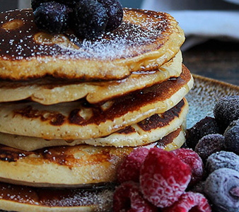

PROTEINPANDEKAGER M. HAVRE OG BANAN
Pris = 10 kr pr servering
Protein = 18 g pr servering
Kalorier = 210 pr servering
Antal serveringer = 4 stk
INGREDIENSER
- 4 Æg
- 2 bananer
- 2 dl havegryn
- 1 spsk vaniljesukker
- 1 Knivspids salt
INSTRUKTIONER
- Mos bananerne i en skål og tilføj æggene. Rør dette rundt indtil det er en samlet masse
- Tilføj de resterende tørre indgredienser og rør det sammen.
- Tilføj smør til en varm pande og steg pandekagerne på begge sider indtil de er gennemstegte
- Tilføj din yndlings form for topping og spis